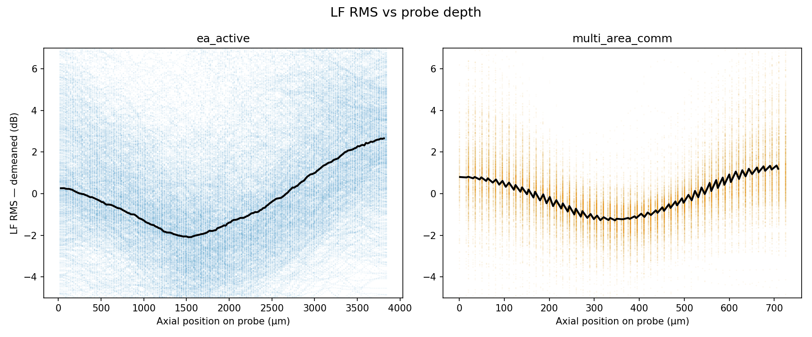
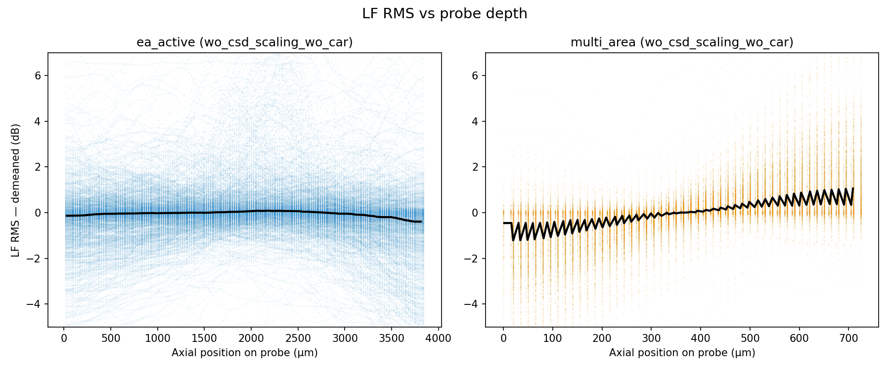

Code
import warnings
import numpy as np
import matplotlib.pyplot as plt
import matplotlib.gridspec as gridspecOlivier Winter
May 20, 2026
Common Average Referencing (CAR) subtracts the mean across channels at each time step. When channels are spatially correlated this introduces a position-dependent bias in per-channel RMS: edge channels lose less variance than central ones, producing a characteristic U-shape.


Consider \(N\) channels with an exponentially decaying covariance plus uncorrelated noise:
\[C_{jk} = \sigma_s^2\,e^{-|j-k|/\lambda} + \sigma_n^2\,\delta_{jk}\]
where \(\lambda\) is the spatial correlation length in channels.
The CAR-subtracted signal \(y_j = x_j - \frac{1}{N}\sum_k x_k\) has variance
\[\operatorname{Var}(y_j) = C_{jj} - \frac{2}{N}\sum_k C_{jk} + \frac{1}{N^2}\sum_{j,k} C_{jk}\]
Setting \(r = e^{-1/\lambda}\) and splitting the absolute value, the row sum closes in a geometric series:
\[S_j \equiv \sum_{k=0}^{N-1} r^{|j-k|} = \frac{1 + r - r^{j+1} - r^{N-j}}{1-r}\]
The grand sum \(T \equiv \sum_j S_j\) is
\[T = \frac{N(1+r) - \dfrac{2r(1-r^N)}{1-r}}{1-r}\]
Substituting and separating the noise contribution gives the closed-form RMS profile:
\[\boxed{ \mathrm{RMS}_j = \sqrt{ \sigma_s^2\!\left(1 - \frac{2S_j}{N} + \frac{T}{N^2}\right) + \sigma_n^2\,\frac{N-1}{N} } }\]
The noise term \(\sigma_n^2(N-1)/N\) is position-independent — it is the standard single-degree-of-freedom reduction from mean subtraction.
For a channel deep in the array (\(r^j \approx 0\), \(r^{N-j} \approx 0\)):
\[S_j^\infty = \frac{1+r}{1-r} \approx 2\lambda \quad (\lambda \gg 1)\]
For an edge channel (\(j = 0\) or \(j = N-1\), with \(N \gg \lambda\)):
\[S_0 = \frac{1-r^N}{1-r} \approx \lambda\]
The edge row sum is roughly half the bulk value, so CAR removes half as much signal variance at the edges. The transition from elevated-edge to flat-bulk RMS occurs over \(\approx\lambda\) channels — the width of the U-shape horns is a direct read-out of the spatial correlation length.
rng = np.random.default_rng(42)
N = 500 # channels
T_samp = 20_000 # time samples
sigma_s = 1.0
sigma_n = 0.5
n_win = 6 # time windows for variability display
def analytical_rms(N, lam, sigma_s, sigma_n):
"""Closed-form per-channel RMS after CAR."""
r = np.exp(-1.0 / lam)
j = np.arange(N)
S = (1 + r - r ** (j + 1) - r ** (N - j)) / (1 - r)
T_grand = (N * (1 + r) - 2 * r * (1 - r**N) / (1 - r)) / (1 - r)
var = sigma_s**2 * (1 - 2 * S / N + T_grand / N**2) + sigma_n**2 * (N - 1) / N
return np.sqrt(np.clip(var, 0, None))
def simulate(N, lam, sigma_s, sigma_n, T_samp, rng):
"""Generate correlated data, apply CAR, return (data, data_car)."""
idx = np.arange(N)
C = sigma_s**2 * np.exp(-np.abs(idx[:, None] - idx[None, :]) / lam)
C += sigma_n**2 * np.eye(N)
evals, evecs = np.linalg.eigh(C)
L = evecs * np.sqrt(np.maximum(evals, 0))[None, :]
with warnings.catch_warnings():
warnings.simplefilter("ignore")
data = L @ rng.standard_normal((N, T_samp))
data_car = data - data.mean(axis=0, keepdims=True)
return data, data_car
lambdas = [100, 300]
fig, axes = plt.subplots(2, 2, figsize=(11, 7), sharey="row", sharex=True)
cmap = plt.get_cmap("tab10")
win = T_samp // n_win
for col, lam in enumerate(lambdas):
data, data_car = simulate(N, lam, sigma_s, sigma_n, T_samp, rng)
rms_pred = analytical_rms(N, lam, sigma_s, sigma_n)
# top row: original
for i in range(n_win):
s, e = i * win, (i + 1) * win
axes[0, col].plot(np.sqrt(np.mean(data[:, s:e]**2, axis=1)),
color=cmap(i), alpha=0.6, lw=0.8)
axes[0, col].set_title(f"Original (λ = {lam})")
axes[0, col].set_ylabel("RMS" if col == 0 else "")
# bottom row: after CAR
for i in range(n_win):
s, e = i * win, (i + 1) * win
axes[1, col].plot(np.sqrt(np.mean(data_car[:, s:e]**2, axis=1)),
color=cmap(i), alpha=0.6, lw=0.8)
axes[1, col].plot(rms_pred, "k--", lw=1.5, label="Analytical")
axes[1, col].set_title(f"After CAR (λ = {lam})")
axes[1, col].set_ylabel("RMS" if col == 0 else "")
axes[1, col].set_xlabel("Channel index")
axes[1, col].legend(fontsize=8)
fig.suptitle(
f"N = {N}, σ_s = {sigma_s}, σ_n = {sigma_n} — {n_win} time windows overlaid",
fontsize=10,
)
plt.tight_layout()
from pathlib import Path
Path("figures").mkdir(exist_ok=True)
plt.savefig("figures/simulate.png", dpi=150)
plt.close()CAR suppresses the spatially correlated signal most effectively for central channels — those with correlated neighbours on both sides — and least at the edges. The resulting U-shaped RMS profile is fully predicted by a closed-form expression in terms of \(r = e^{-1/\lambda}\). Crucially, the horn width of the U directly estimates \(\lambda\): for \(\lambda = 100\) the upturn spans ~100 channels; for \(\lambda = 300\) it spans the entire 500-channel array, preventing the profile from ever flattening. This makes the post-CAR RMS a cheap diagnostic for the spatial correlation scale of the recording.
---
title: "RMS bias from Common Average Referencing"
description: "CAR on spatially correlated channels produces a U-shaped per-channel RMS profile. We derive the closed-form expression and verify it against synthetic data."
date: "2026-05-20"
author: "Olivier Winter"
categories: [signal-processing, neuroscience]
---
## Overview
Common Average Referencing (CAR) subtracts the mean across channels at each time step.
When channels are spatially correlated this introduces a **position-dependent bias** in
per-channel RMS: edge channels lose less variance than central ones, producing a
characteristic U-shape.
## Data


## Model
### Covariance
Consider $N$ channels with an exponentially decaying covariance plus uncorrelated noise:
$$C_{jk} = \sigma_s^2\,e^{-|j-k|/\lambda} + \sigma_n^2\,\delta_{jk}$$
where $\lambda$ is the spatial correlation length in channels.
### Variance after CAR
The CAR-subtracted signal $y_j = x_j - \frac{1}{N}\sum_k x_k$ has variance
$$\operatorname{Var}(y_j)
= C_{jj}
- \frac{2}{N}\sum_k C_{jk}
+ \frac{1}{N^2}\sum_{j,k} C_{jk}$$
Setting $r = e^{-1/\lambda}$ and splitting the absolute value, the row sum closes in a
geometric series:
$$S_j \equiv \sum_{k=0}^{N-1} r^{|j-k|}
= \frac{1 + r - r^{j+1} - r^{N-j}}{1-r}$$
The grand sum $T \equiv \sum_j S_j$ is
$$T = \frac{N(1+r) - \dfrac{2r(1-r^N)}{1-r}}{1-r}$$
Substituting and separating the noise contribution gives the closed-form **RMS profile**:
$$\boxed{
\mathrm{RMS}_j = \sqrt{
\sigma_s^2\!\left(1 - \frac{2S_j}{N} + \frac{T}{N^2}\right)
+ \sigma_n^2\,\frac{N-1}{N}
}
}$$
The noise term $\sigma_n^2(N-1)/N$ is position-independent — it is the standard
single-degree-of-freedom reduction from mean subtraction.
### Asymptotic limits
For a channel deep in the array ($r^j \approx 0$, $r^{N-j} \approx 0$):
$$S_j^\infty = \frac{1+r}{1-r} \approx 2\lambda \quad (\lambda \gg 1)$$
For an edge channel ($j = 0$ or $j = N-1$, with $N \gg \lambda$):
$$S_0 = \frac{1-r^N}{1-r} \approx \lambda$$
The edge row sum is roughly **half** the bulk value, so CAR removes half as much signal
variance at the edges. The transition from elevated-edge to flat-bulk RMS occurs over
$\approx\lambda$ channels — the width of the U-shape horns is a direct read-out of the
spatial correlation length.
## Simulation
```{python}
#| label: setup
import warnings
import numpy as np
import matplotlib.pyplot as plt
import matplotlib.gridspec as gridspec
```
```{python}
#| label: simulate
#| output: false
rng = np.random.default_rng(42)
N = 500 # channels
T_samp = 20_000 # time samples
sigma_s = 1.0
sigma_n = 0.5
n_win = 6 # time windows for variability display
def analytical_rms(N, lam, sigma_s, sigma_n):
"""Closed-form per-channel RMS after CAR."""
r = np.exp(-1.0 / lam)
j = np.arange(N)
S = (1 + r - r ** (j + 1) - r ** (N - j)) / (1 - r)
T_grand = (N * (1 + r) - 2 * r * (1 - r**N) / (1 - r)) / (1 - r)
var = sigma_s**2 * (1 - 2 * S / N + T_grand / N**2) + sigma_n**2 * (N - 1) / N
return np.sqrt(np.clip(var, 0, None))
def simulate(N, lam, sigma_s, sigma_n, T_samp, rng):
"""Generate correlated data, apply CAR, return (data, data_car)."""
idx = np.arange(N)
C = sigma_s**2 * np.exp(-np.abs(idx[:, None] - idx[None, :]) / lam)
C += sigma_n**2 * np.eye(N)
evals, evecs = np.linalg.eigh(C)
L = evecs * np.sqrt(np.maximum(evals, 0))[None, :]
with warnings.catch_warnings():
warnings.simplefilter("ignore")
data = L @ rng.standard_normal((N, T_samp))
data_car = data - data.mean(axis=0, keepdims=True)
return data, data_car
lambdas = [100, 300]
fig, axes = plt.subplots(2, 2, figsize=(11, 7), sharey="row", sharex=True)
cmap = plt.get_cmap("tab10")
win = T_samp // n_win
for col, lam in enumerate(lambdas):
data, data_car = simulate(N, lam, sigma_s, sigma_n, T_samp, rng)
rms_pred = analytical_rms(N, lam, sigma_s, sigma_n)
# top row: original
for i in range(n_win):
s, e = i * win, (i + 1) * win
axes[0, col].plot(np.sqrt(np.mean(data[:, s:e]**2, axis=1)),
color=cmap(i), alpha=0.6, lw=0.8)
axes[0, col].set_title(f"Original (λ = {lam})")
axes[0, col].set_ylabel("RMS" if col == 0 else "")
# bottom row: after CAR
for i in range(n_win):
s, e = i * win, (i + 1) * win
axes[1, col].plot(np.sqrt(np.mean(data_car[:, s:e]**2, axis=1)),
color=cmap(i), alpha=0.6, lw=0.8)
axes[1, col].plot(rms_pred, "k--", lw=1.5, label="Analytical")
axes[1, col].set_title(f"After CAR (λ = {lam})")
axes[1, col].set_ylabel("RMS" if col == 0 else "")
axes[1, col].set_xlabel("Channel index")
axes[1, col].legend(fontsize=8)
fig.suptitle(
f"N = {N}, σ_s = {sigma_s}, σ_n = {sigma_n} — {n_win} time windows overlaid",
fontsize=10,
)
plt.tight_layout()
from pathlib import Path
Path("figures").mkdir(exist_ok=True)
plt.savefig("figures/simulate.png", dpi=150)
plt.close()
```

## Conclusion
CAR suppresses the spatially correlated signal most effectively for central channels —
those with correlated neighbours on both sides — and least at the edges. The resulting
U-shaped RMS profile is fully predicted by a closed-form expression in terms of $r =
e^{-1/\lambda}$. Crucially, the **horn width** of the U directly estimates $\lambda$:
for $\lambda = 100$ the upturn spans ~100 channels; for $\lambda = 300$ it spans the
entire 500-channel array, preventing the profile from ever flattening. This makes the
post-CAR RMS a cheap diagnostic for the spatial correlation scale of the recording.
{kind=link}